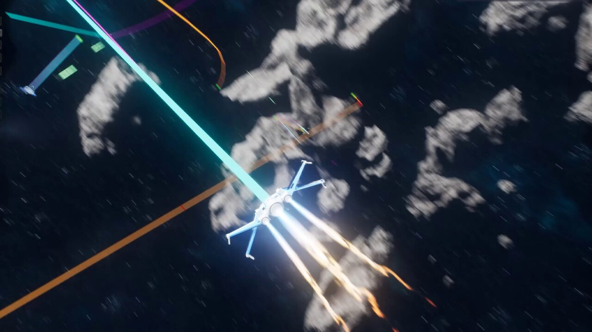

UEDEV / 3D Navigation AI / Space · Updated
v3.6.0 Use case · Space combat
Space combat and dogfight AI for Unreal Engine 5
No floor, no up, no walls. Fighters chase a target through a streamed asteroid belt, lead it with fire and re-plan through the octree as it breaks — while a Mass raider swarm closes round whatever it sees.
- 5.0 on Fab · 3 ratings
- LCM 3D Navigation AI
- Unreal Engine 5.2–5.8
- Full pitch and roll
- 6-DOF
- Raiders in the Mass swarm
- 18
- Streamed asteroid belt
- ∞
- AI nodes
- 85

Navigation with nothing to stand on
A surface navmesh has nothing to project onto in space. The octree treats a debris field, an asteroid belt or a station interior as ordinary navigable volume, so routes go over, under and between rocks in any direction. Flight takes its gravity from the level (World Settings or a Physics Volume) instead of a fixed value.

Chase, intercept, re-plan
In the Space Dogfight demo, Fly To in chase mode follows a target that breaks, jinks behind rocks and turns back for head-on passes, re-planning through the octree as it moves while both squads trade fire. Engage Target leads a crossing target and holds a firing position until the target leaves it.

A belt with no edge
The asteroid belt is an infinite world: navigation chunks stream in around the fighters and are discarded behind them, so memory stays flat however far the fight drifts. Long routes solve coarsely across chunks and finely within the current one.

Raider swarms on Mass Entity
The Raider Swarm demo runs a Mass swarm of eighteen raiders that sweeps the belt and closes round any fighter it sees, sharing the positions round it, while six fighters hunt them one by one with Fly To in chase mode. Fighters use the Jet / Fixed-Wing archetype: a thrust body with banking, inertia and turn-rate limits.
See it in the demo levels
These levels are part of the 57 free demo levels you download from inside the editor (LCM Nav3D menu › Get the Demo Levels).
Space Dogfight
Fighters hunt raiders through a streamed asteroid belt.
- Fly To chase
- BT · StateTree
Raider Swarm
A Mass swarm of eighteen raiders against six hunting fighters.
- Mass StateTree
- Engage
Deep Space
A drifting asteroid field streamed around the fleet.
- Open world
- BT · ST · Mass
Common questions
How do I make spaceship AI in Unreal Engine 5?
Place an LcmNavigationManagerSVO (in infinite mode for a large or unbounded space), give the ship LcmFlightMovementComponent with the Jet / Fixed-Wing archetype, and drive it with the Fly To task in a Behaviour Tree or StateTree; Fly To has a chase mode for moving targets.
Does it need a floor or gravity?
No. The octree stores navigable volume in every direction, and flight takes its gravity from the level rather than a fixed value.
Can it handle an asteroid field that streams in?
Yes. In infinite mode navigation chunks stream in around agents and unload behind them, and the Space Dogfight and Deep Space demos both run in streamed asteroid fields.
Read more in the free documentation: